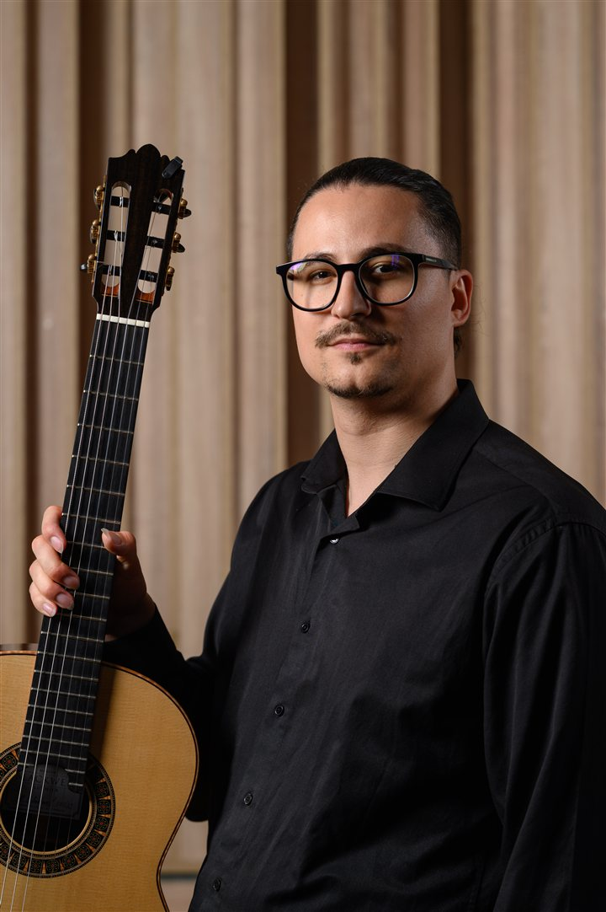

Dragoș Ilie
Chitarist

Numit de Radio România Muzical drept „o adevărată revelație a ultimilor ani pe scenele românești de concert”, chitaristul Dragoș Ilie s-a remarcat ca unul dintre cei mai carismatici și expresivi muzicieni ai generației sale, cucerind publicul din Europa, Asia și Statele Unite.
A început studiul chitarei de la o vârstă fragedă, sub îndrumarea tatălui său, continuând apoi la Colegiul Național de Artă „Octav Băncilă” din Iași, la clasa profesorului Marius Țîmpău, studiind în paralel cu Conf. univ. dr. Daniel Dragomirescu.
De-a lungul carierei, Dragoș a obținut peste 40 de premii la competiții internaționale de prestigiu, printre care Koblenz Guitar Festival, Guitar Foundation of America (GFA), Tokyo Guitar Competition, Culiacan International Competition, Changsha International Guitar Festival și Miami Guitar Festival. A susținut concerte, masterclass-uri și workshopuri pe trei continente și a fost prezent în publicații de renume precum Classical Guitar Magazine, Soundboard Magazine, Gendai Guitar și Acoustic Guitar Magazine.
A colaborat cu importante ansambluri orchestrale — Orchestra Filarmonicii de Stat „Transilvania”, Orchestra de Cameră Radio și Orchestra Națională Radio — prin intermediul bursei „Moștenitorii României Muzicale”.
Perseverența și tenacitatea sa artistică i-au adus numeroase burse de studiu, printre care bursa Fundației MOL pentru Comunitate, programul „Tinere Talente” al Fundației Principesa Margareta a României (cu sprijinul Casei Regale), Bursa „START” și bursa „Moștenitorii României Muzicale”, oferită de Radio România & Rotary Club Pipera.
În 2015, Dragoș a primit prestigioasa Woodruff Scholarship pentru studiile de licență la Schwob School of Music — Columbus State University (SUA), unde a studiat cu compozitorul și pedagogul Andrew Zohn.
Pasionat de promovarea repertoriului românesc pe scena internațională, Dragoș și-a conceput albumul de debut ca pe un proiect care reunește aranjamente proprii — opere de Ciprian Porumbescu și Béla Bartók — și lucrări ale compozitorilor români contemporani. Albumul a fost realizat în colaborare cu Radio România Muzical și este disponibil la Editura Casa Radio.
În 2025, Dragoș a înregistrat primul volum dintr-o serie completă de sonate pentru chitară de Thomas Matiegka, pentru prestigioasa casă de discuri Naxos Records, urmând ca albumul să fie lansat în curând.
Pe lângă activitatea solistică, Dragoș este implicat și în muzica de cameră. Din 2021 face parte din Austin Guitar Quartet, alături de care a participat la realizarea albumului „The Singing Guitar” — nominalizat la Premiile Grammy, alături de Los Angeles Guitar Quartet, Texas Guitar Quartet și ansamblul coral Conspirare. Printre proiectele recente se numără interpretarea lucrării Electric Counterpoint de Steve Reich, în colaborare cu compania de balet din Austin.
Dragoș colaborează frecvent cu violonistul Alexandru Tomescu, fiind partener de scenă în turneele „Stradivarius”: ediția 2022 — „Paganini Magic”, cu lucrări de Niccolò Paganini pentru vioară și chitară, și ediția 2025 — „Rapsodiile”, ce include aranjamente semnate de Dragoș ale Rapsodiilor Române de George Enescu și ale lucrării Rhapsody in Blue de George Gershwin.
Activitatea sa artistică cuprinde și concerte în Londra, Veneția și Paris (cu ocazia deschiderii Jocurilor Olimpice), precum și proiecte educaționale ca tabăra de masterclass „Enescu Experience” — Cabana Caraiman, ediții susținute între 2023 și 2025.
Dragoș a finalizat studiile doctorale la University of Texas at Austin, unde a fost asistent universitar la clasa renumitului pedagog și interpret Adam Holzman. În prezent este profesor la Universitatea Națională de Arte „George Enescu” din Iași, unde integrează în activitatea didactică principii somatice precum Body Mapping, contribuind la prevenirea accidentărilor în rândul muzicienilor.